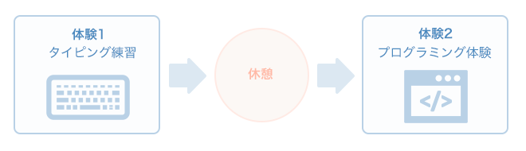

まずはタイピングの練習をしてみましょう。
タイピングが得意な方はタイピングの確認まで飛んでも大丈夫です。
得点をメモしておいて下さい
一日の体験終了時に振り返りシートの送信をお願いします。
※ 振り返り送信で、本日の体温の入力がありますのでお近くにご準備くださいませ。
※ 最初はスタッフとご一緒に ご確認くださいませ。
途中、疲れたり、お困りのことがありましたら、お気軽にお声かけ下さい。
公式LINEにメッセージでを送って頂いても対応いたします。
作業中、動画などを見る場合は、イヤホン・ヘッドホンをご使用ください。
それ以外では、ミュートでのご使用をお願いします。
※ 貸し出し用もありますのでお知らせください
本日の体験は以下の流れで行います（あくまで一例です）。
いったん休憩しましょう。
肩を回すなどの体操をして頂くのも良いと思います。
背伸びなどをして深呼吸も試してみてください。
今日はどこまで進みましたか？
お手元のファイルに成果を記録し、振り返りシートの送信をお願いします。
シートの送信が終わったら、使用した機材の片付けをお願いします。
( ご不明な場合スタッフにお声かけください )
ルーツ千葉では、就労に向かうための習慣づけのために、連続での体験を勧めております。
スタッフと次回の体験についての確認をしてください。
一日の終了です♪お疲れ様でした。